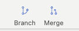

Introduction to Git and Github
Git and Github Overview
- Version Control and Git
- Local vs. Remote Repositories
- Github
Version Control System
What is it?
- A system that:
- Keeps records of your changes.
- Allows for collaborative development.
- Allows you to know who made what changes and when.
- Allows you to revert any changes and go back to a previous state.
Let's see version control in action in a Google Doc!
Collaborating in Code
Alex creates this code and commits it as version 0:
function addTwo(num){
return num + 2;
}
Alex edits and commits as version 1:
function addThree(num){
return num + 3;
}
Collaborating in Code 2
Billie pulls the code from version 0 and edits:
function addTwo(num){
if (num === Infinity){
alert("Cannot add to infinity!");
}
return num + 2;
}
Billie pulls Alex's changes and the system merges them:
function addThree(num){
if (num === Infinity){
alert("Cannot add to infinity!");
}
return num + 3;
}
Version Control
Version control systems are categorized as either "centralized" or "distributed."
Centralized version control systems are based on the idea that there is a single "central" copy of your project somewhere (probably on a server), and programmers will "commit" their changes to this central copy.
In distributed systems, every developer "clones" a copy of a repository and has the full history of the project on their own hard drive.
Centralized vs distributed systems
What is Git?
Git is a popular version control system!
Other systems exist. However, Git is considered by many to be the best.
Git allows groups of people to work on the same documents (often code) at the same time, and without stepping on each other's toes.
Goals of Git Design
- Collaborate effectively
- Each new update to the code has a corresponding hash (it tracks the changes from everyone)
- Everyone has a local copy of the history of the source code
Install Git
Reference this Git Setup Guide.
How does Git work?
There are a few key concepts. No need to worry. You will get them over time!
Important GIT terms in the following slides will be in yellow.

Key Concept: Snapshots
- The way Git keeps track of your code history
- Essentially records what all your files look like at a given point in time
- You decide when to take a snapshot and of what files
- You can go back and visit any snapshot
Key Concept: Commit
- The act of creating a snapshot
- Can be a noun or a verb
- Noun: "I just made a new commit."
- Verb: "I committed code."
- Essentially, a project is made up of a bunch of commits
Key Concept: Commit
Commits contain three pieces of information.
- Information about how the files changed from previously
- A reference to the commit that came before it (this is called the parent commit)
- A hashcode name (this will look something like: fb2dec48987dfgdf8798dfg7dfg87dfg79sdsfsdf7sdf78h9n
Key Concept: Repository
- Often called a 'repo'
- A collection of all the files and the history of all those files
- Consists of all of your commits
- Place where all you hard work is stored!
Key Concept: Branches
- All commits in Git live on a branch
- But there can be many many branches
- The production branch in a project is called the main branch.
Getting Started
You can create repositories that are version controlled on your own computer. These are called local repositories.
Creating a local repository
When creating a new project on your local machine using Git, you will first create a new repository.
To use Git, we will use Sourcetree.
Sourcetree is a GUI for Git.
Git GUI Tool Setup
Refer to this Git GUI Setup Guide.
Git and Github Overview
- Version Control and Git
- Local vs. Remote Repositories
- Github
Select an Existing Local Repository
We can add an existing local repository using Sourcetree.
The local repo will appear in your Sourcetree browser.
Updating the Local Repository
We can update the local repository by:
- Making changes in our code locally
- Staging the files we changed
- Committing the changes
A commit message is needed before pushing the changes.
Commit Message Best Practices
While committing changes to a repository, use industry standard language and conventions for messages.
- Commit message subject:
- "initial commit" - great for the first files in a remote repo
- "fixes [issue#]" - great for open source Github projects or dev shop tickets
- "Updates to navigation bar for accessibilty and responsive design" - Clear description of the code changes
Commit Message Best Practices
Everyone, including clients!, can read commit messages. They should be clear, descriptive, and professional.
Local vs Remote
You want to be able to collaborate on your code and not just keep the commit on your local computer. And you want to be able to pull someone else's code.
Key Concept: Repository
- Can live on a local machine (aka your computer) or on a remote server (like Github!)
- The act of copying a repository from a remote server is called cloning.
- Cloning from a remote server allows teams to work together.
Key Concept: Repository
- The process of downloading commits that don't exist on your machine from a remote repository is called pulling changes.
- The process of adding your local changes to the remote repository is called pushing changes.
Git and Github Overview
- Version Control and Git
- Local vs. Remote Repositories
- Github
Github!

What is Github?
- It is the largest web-based Git repository hosting service.
- Allows for code collaboration with anyone online
- Adds a bunch of features like bug tracking!
- Check out our AnnieCannons Github Repo.
Using Remote Repos
Sourcetree is your best Git friend to push, pull, commit, etc. Double click on a local repo listing for options to:
- Pull - checks remote code to update local repo
- Commit - preps updates from local to remote repo
- Push - pushes changes from local to remote repo
Using Sourcetree
Imagine pair programming with someone. How will you share your files with each other? How will you be able to tell who made which changes, and when?
Check out this video!
Fork a Repo!
Search Github for a repo to fork.

Review
Check out AnnieCannons' repo here!
AC Algorithms Exercise
- Search for AnnieCannons' Github repository.
- Fork the ac-algorithms repository.
- Find the forked repository in your profile's repositories to clone.
- Working through the files in your local repo.
- Finally, commit and push those changes to your remote repo.
🎉 Your first clone! 🎊
Gitflow & Truck-based Development
Read here
What is a Merge?
When working on a dev branch, you can merge the code back into the main branch.
What is a Pull Request?
If you don't have access to a public project (meaning you are not an authorized collarborator), you are not allowed to create a branch and merge it into the project.
You can submit code for review to be accepted to the project. This is great for open source projects and great for your resume!
Read more here
Git and Github Overview
- Version Control and Git
- Local vs. Remote Repositories
- Github
THE END
Thank you for your attention!